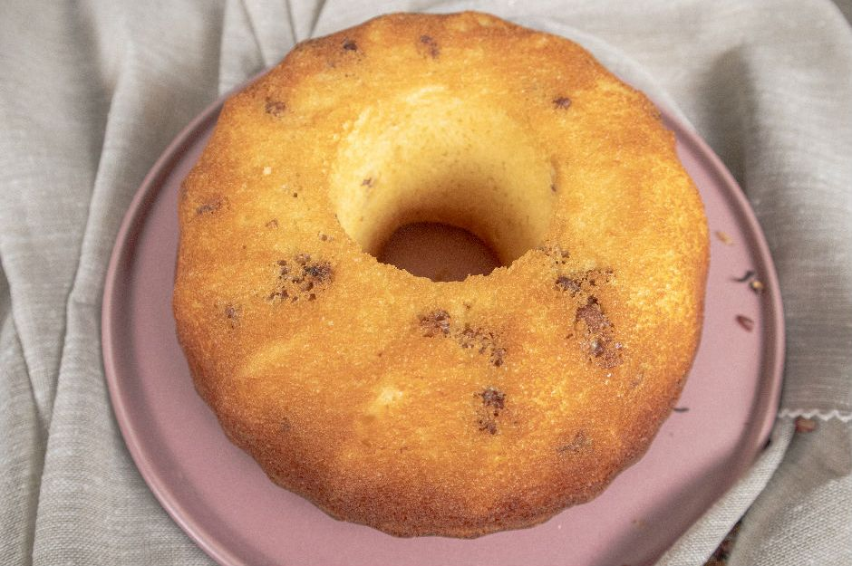
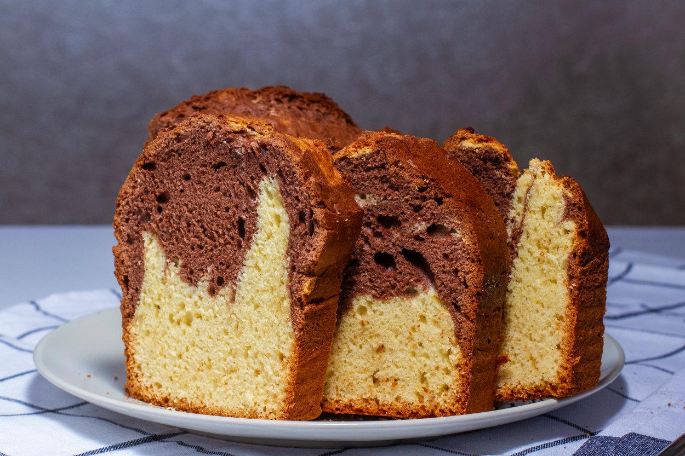
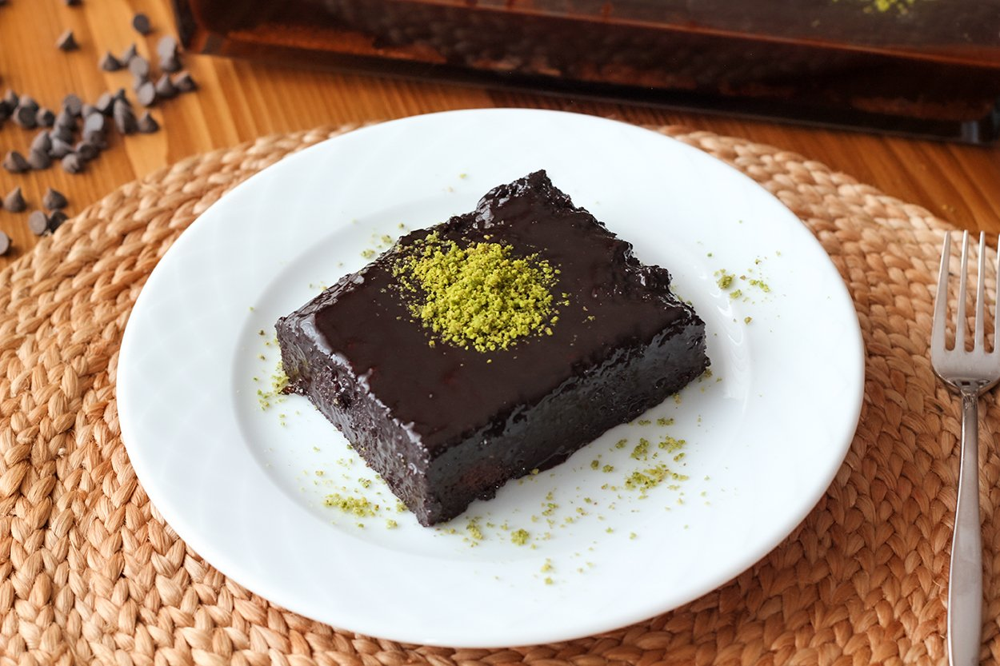
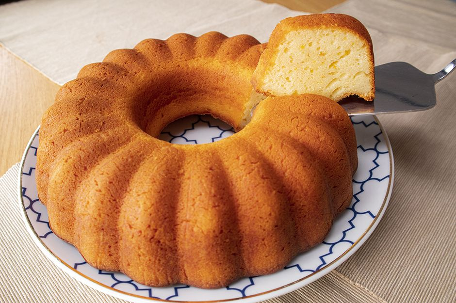
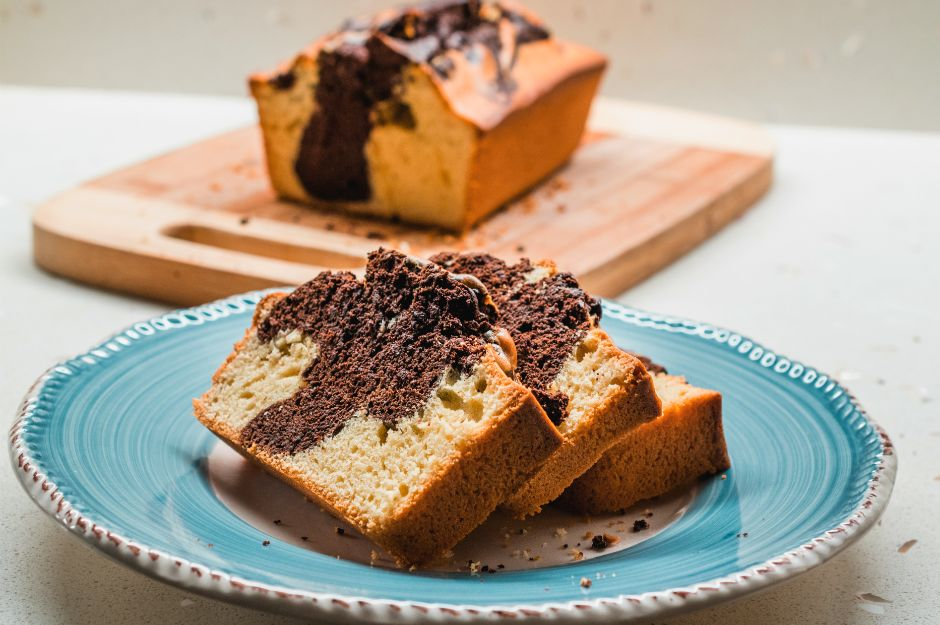
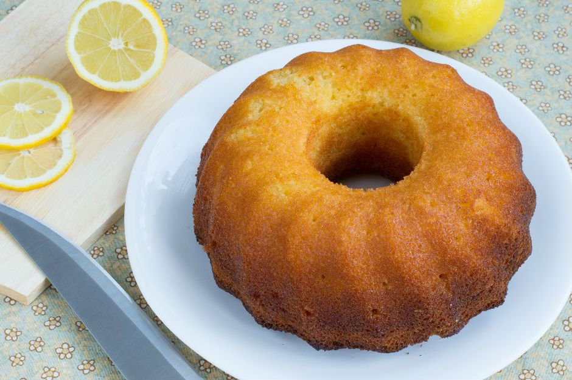

Limonlu Cevizli Kek Tarifi
Çay saatlerinin en büyük kurtarıcısıdır kek tarifleri. Mutfağa girip 3 yumurtayı biraz şeker, un ve
diğer sıvı malzemelerle karıştırıp fırına atıp, çayınızın yanına şipşak hazır bir tatlı
yapabiliyoruz onlar sayesinde. En çok da klasiklerini seviyoruz.

Mozaik Kek Tarifi
Mozaik pasta olur da mozaik kek olmaz mı? Olur, hem de iki renkli lezzet dalgaları şeklinde yayılan
bu kek çok da güzel olur. Ebru sanatı tadında olan bu keki hazırlamak, tarifinde saklı olan iki
renkli kek harcını ince dokunuşlarla birbirine karıştırmaktan geçer.

Islak Kek Tarifi
Şöyle bol soslu bir ıslak kek dilimine kim hayır diyebilir? Bir ısırıkla çikolata şelalesinden yudum
alıyormuş gidi hissedeceğiniz bu browni tadında ıslak kek tarifi bol porsiyonlu, bol soslu bir kek
tarifi. Fakat şimdiden uyaralım, bir kez tadına bakan muhakkak tarifini isteyecek! Bu enfes ıslak
kekin tadını unutamayacaklar!

Portakallı Kek Tarifi
Özellikle kış aylarında evin mis kokulu lezzetine dönüşüyor portakallı kek tarifi. Ancak portakallı
kek yaparken kimi zaman ölçüleri şaşabiliyor ve kıvam sorunu yaşanabiliyor. Kıvam sorunu olmadan
hazırlanan bir portakallı kek arayışı içerisindeyseniz, ''Ne yaparsam yapayım kekim hiç istediğim
gibi olmuyor'' diyorsanız, derdinize çare olacak nefis bir kek tarifiyle tanıştıralım sizleri.
Kokusu da tadı da dillere destan olacak muhteşem yoğurtlu portakallı kek tarifi ile karşınızdayız.

Mermer Kek Tarifi
Her daim çay saatlerinin en gözdesi olmaya devam edecek mermer keki sevmeyen var mıdır? Normalde
vanilya ve çikolata ile ayrı kek karışımı hazırlayarak yaptığımız bu kek tarifi pratik olmaktan
çıkabiliyor. Fakat pratik haliyle yapmak da bir o kadar mümkün. Çikolata yerine kakao kullanarak
hazırlıyoruz, içine de süt ve sıvı yağ koyuyoruz böylece pamuk gibi bir kek elde ediyoruz.

Puf Limonlu Kek Tarifi
Çay saatlerinizi güzelleştirecek, yemelere doyamayacağınız bir tarifle karşınızdayız. İç dokusu
yumuşacık ve çok lezzetli bir kek bu. Misler gibi kokusunun sırrı da limon kabuğundan geliyor. İşin
sırrı ise yumurta beyazlarını ve sarılarını ayrı ayrı çırpmakta saklı. Yumurta beyazlarını ayrıca
çırpmak ve harca eklemek kekinize pofuduk ve şahane bir kıvam vermenin anahtarı.